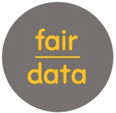
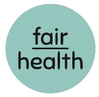
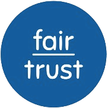

O espaço que falta
Entre a medicina do trabalho e o plano de saúde, existe um espaço que ninguém cuida.
fairhealth
Medicina
do trabalho
Plano
de saúde
a rotina e os
primeiros sinais
É nele que a fairhealth trabalha.
@fairhealth.br
Arraste para o lado →
Um cuidado real
Cuidado de verdade, todo dia, dentro da empresa.
Médicos e psicólogos presentes
Um plano de cuidado para cada pessoa
Não é campanha. Não é app. É gente cuidando de gente.
@fairhealth.br
Conformidade regulatória
NR-1: segurança psicossocial no trabalho.
Obrigação legalA gestão de riscos psicossociais agora vale para empresas de todos os portes.
Riscos psicossociaisEstresse, burnout e ansiedade precisam ser identificados, monitorados e mitigados.
Como a fairhealth ajudaEscritório do Cuidado e Programa MEV, com registros e rastreabilidade.
@fairhealth.br
O argumento certo para cada decisor
Mesmo programa. Três argumentos, um para cada mesa.
Para o RHUm programa preventivo real, com impacto na marca empregadora.
Para o médico do trabalhoEvidência clínica de Medicina do Estilo de Vida e dados integráveis ao PGR.
Para o financeiroIndicadores de saúde e de custo para apresentar ao board.
@fairhealth.br
Ecossistema fairjob
A fairhealth é o cuidar do ecossistema fairjob.

fairdatamedir

fairhealthcuidar
faireduconscientizar

fairtrustcomprovar
Gestão de pessoas que começa pela saúde.
@fairhealth.br
Vem com a gente
Gostou? Leve esse cuidado adiante.
Salve para consultar depois.
Compartilhe com quem cuida das pessoas na sua empresa.
Conheça o programa no link da bio.
Fale com a gente pelo direct.

Fazemos o certo pelos motivos certos.
@fairhealth.br